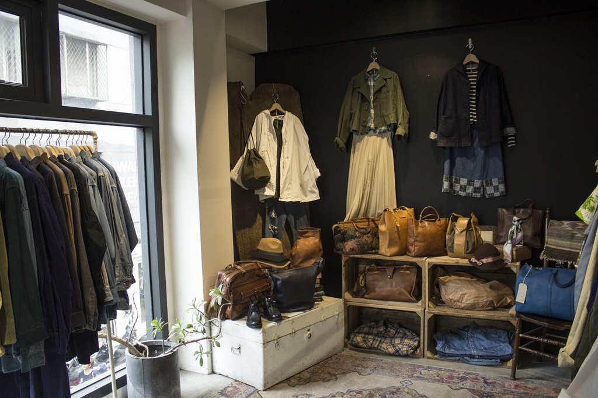

Level2
古著穿搭
帶你回去90年代感
復古的英文是 Vintage，許多人對復古都有不同的解讀，但總體而言復古是經時代篩選過所留下來最具獨特、魅力的經典，這些通常都具有沈澱過的懷舊意味。
想要看更多資訊嗎? 進入觀看

Level2
復古的英文是 Vintage，許多人對復古都有不同的解讀，但總體而言復古是經時代篩選過所留下來最具獨特、魅力的經典，這些通常都具有沈澱過的懷舊意味。
想要看更多資訊嗎? 進入觀看